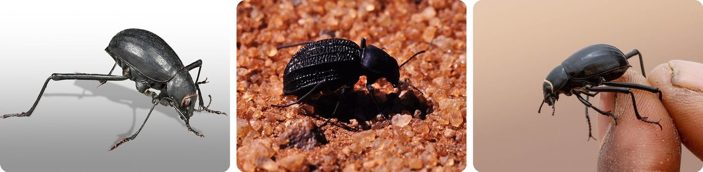
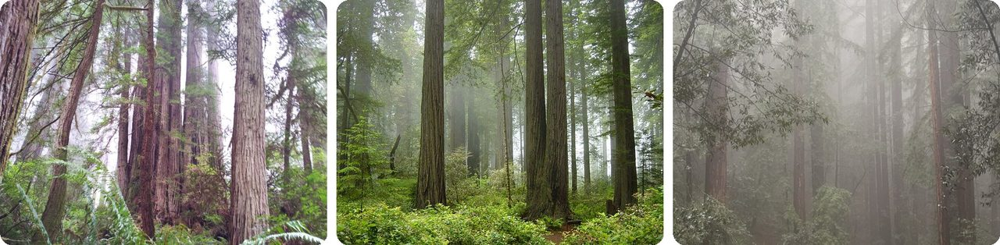
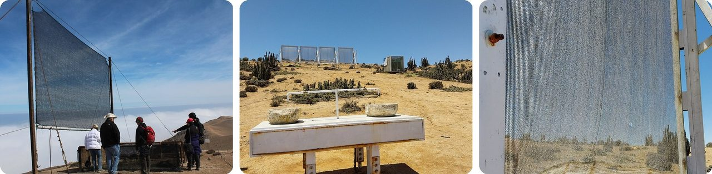
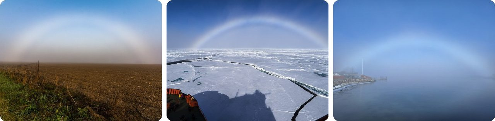
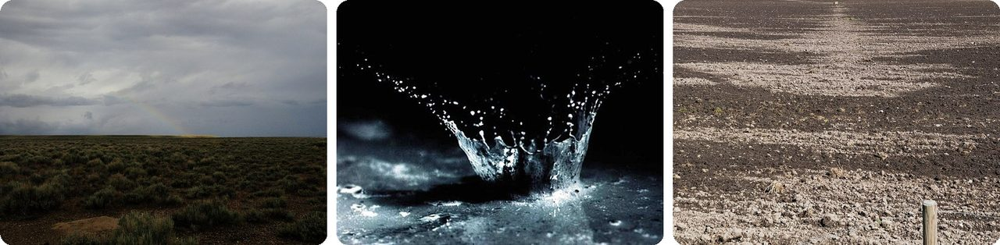
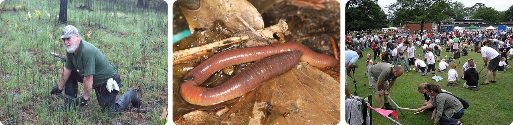
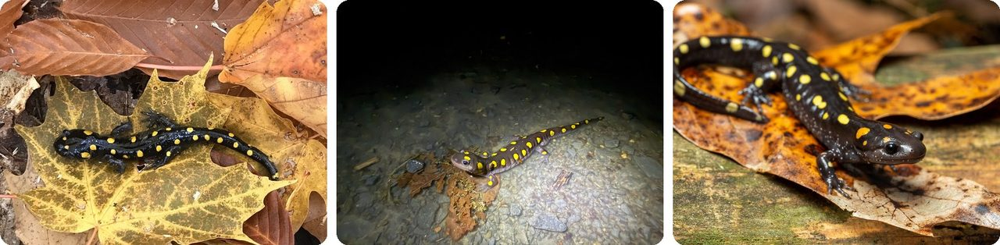
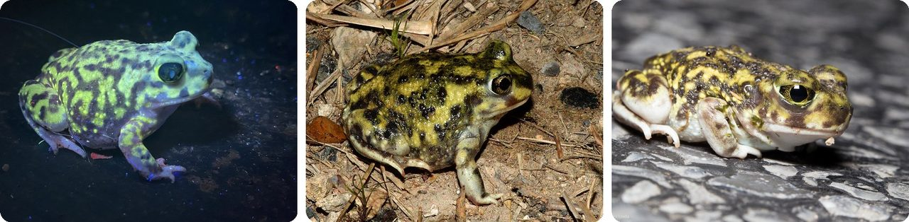
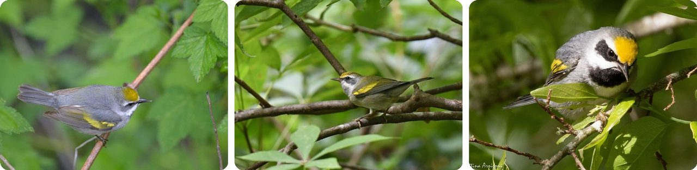
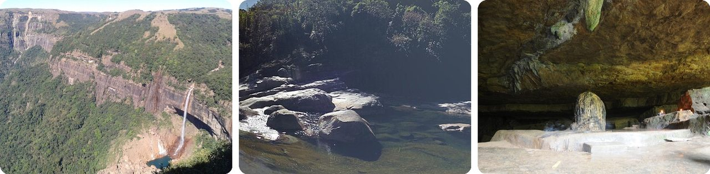

🌍 十大 雨和雾里的天气与动物秘密
2026年11月13日
1. 🇳🇦 纳米布“晒雾甲虫”靠“倒立”喝雾水

纳米比亚纳米布沙漠的西半边，一年只下 0 到 12 毫米的雨，还不到半英寸。这里大部分的水，是从海上吹来的雾带来的。这种甲虫平时一到晚上就钻进沙子里。可是一到起雾的夜晚，它就爬上沙丘，迎着风 倒立，把身体翘起大约 23 度。雾凝在它背上 → 水珠顺着往下流 → 正好滚进它嘴里。
有记录显示，有的甲虫这样喝下的水，能达到自己体重的 34%。这就好比一个 30 公斤（66 磅）的小朋友，一晚上喝掉大约 10 升水。
它就是一个靠倒立自己灌满的水壶。
2. 🇺🇸 加州海岸红杉用叶子“喝”雾

海岸红杉长在太平洋沿岸窄窄的一条地带上，从加州一直到俄勒冈州西南角。这里的夏天很干，可海上的雾一次又一次地飘进来。这些树用三种办法利用雾。叶子直接从空气里吸雾，树皮也吸，雾在针叶上聚成水滴，再滴到地上给树根喝。这种 雾滴 能占一棵树一年用水的 30%。
雾甚至可能决定了它们最高能长多高。科学家认为，红杉最高长不过大约 122 到 130 米（400 到 427 英尺），差不多 40 层楼，而要长到这么高，得有雾才行。
你可以把它想成：一棵会从空气里“吸水”的树。
3. 🇨🇱 智利有个村子，自来水是用“捕雾网”接来的

智利北部海岸是地球上最干的地方之一，可是海上会飘来一种叫 camanchaca 的浓雾。科学家在埃尔托福山上立起高高的网来接雾：雾珠粘在网上 → 往下流 → 下面的水槽把水接住。山下的琼贡戈村想要一根管子把水引下山。后来这里扩建到 94 张网，给村里 300 个人供水。可到了 2002 年，一份报告发现只剩下九张网还立着。
这个点子并没有消失。同样在智利，瓦斯科附近的捕雾塔现在每天能产 1 万到 5 万升水，供给农场用，足够灌满一个后院小泳池。
想象一下：一张给云朵戴的大发网。
4. 🌫️ 雾虹是一道“掉了颜色”的彩虹

雾虹的形成方式跟彩虹一样，太阳在你背后，只不过它出现在雾里，而不是雨里。雾里的水珠非常小，不到 0.05 毫米，比一根头发还细。这么小的水珠会把光散开，把颜色糊在一起。所以雾虹只有淡淡的红色外边和偏蓝的里边，很多时候看起来 完全是白的。所以它也叫“白虹”。
水手们给它起了自己的名字，叫“海狗”（sea-dog）。晚上在月光下出现的，叫月光雾虹。
你可以把它想成：一道印成黑白照片的彩虹。
5. 🌧️ 雨的味道，名字来自“众神的血”

1964 年，两位澳大利亚科学家伊莎贝尔·乔伊·贝尔和理查德·托马斯，给雨落在干地上的味道起名叫“petrichor”（潮土油）。这个词来自希腊语：petra 是“石头”，ichor 是希腊神话里众神血管里流的金色液体。它是这样产生的：天干的时候，油脂会在泥土和石头里慢慢积起来。雨滴打到地上时，会困住很多小气泡 → 气泡往上冒、破掉 → 把味道甩到空气里。
这股味道里有一部分是土臭素，是土里的细菌造出来的。你的鼻子能闻出 万亿分之五 浓度的它，比一个奥运会泳池里滴一滴还少。甜菜吃起来有股泥土味，也是因为它。
说白了，每一滴雨都会弹破一个装着“泥土香水”的小泡泡。
6. 🏴 “唤虫人”能骗蚯蚓自己爬出地面

蚯蚓在英语里有个老外号，叫“雨虫”（rainworm），它们会躲开干土。它们对震动也特别敏感：地面一震，它们就爬到地面上来。2008 年，科学家提出了一个原因：这种震动感觉就像鼹鼠在挖土，而鼹鼠是吃蚯蚓的。人们就用这招来抓钓鱼的饵。唤虫人会晃一把插在地里的园艺叉，或者去摩擦一根钉进地里的木桩。鸟也会这一招：海鸥会用脚踩地，跳一种“海鸥舞”。
英格兰的威拉斯顿甚至从 1980 年起就有一个世界唤虫锦标赛。纪录是 567 条蚯蚓，是 2009 年一个 10 岁女孩在只有 3 米乘 3 米（10 英尺乘 10 英尺）的小块地里“唤”出来的。比赛不许用水，等鸟儿都回巢睡觉了，每一条蚯蚓都要放回土里。
这就像去敲蚯蚓家的门，还假装自己是鼹鼠。
7. 🇺🇸 斑点钝口螈要等一个下雨的夜晚，才集体去池塘

斑点钝口螈生活在美国东部和加拿大的森林里，平时躲在地下。到了春天，下过一场雨、气温又高过 40 °F（4 °C）以后，它们就爬出来，走向“春季池塘”。这种池塘经常干掉，所以里面没有鱼。一个晚上就有成百上千只一起出发，这一晚叫 “大夜”（Big Night）。在马萨诸塞州的北阿默斯特，它们得穿过亨利街，所以镇上专门在马路下面给它们修了隧道。
它们的卵还藏着另一个秘密：包着卵的果冻里住着绿藻，在宝宝长大的时候给它们制造氧气。
换句话说，这是一场雨夜大游行，还配了专用地下通道。
8. 🇺🇸 库氏锄足蟾从卵到小蟾蜍只要 9 天

库氏锄足蟾生活在美国西南部和墨西哥北部的沙漠里。旱季时，它用后脚上一块硬硬的“小铲子”挖进地下，把自己封在一个不透水的茧里。夏天一场雷雨打下来，雄蟾就挖出地面，去找雨水积成的水坑。它们一叫，雌蟾就来了，雨开始下的第一个晚上就交配。
水坑干得很快，所以宝宝们得赶时间：卵 → 蝌蚪 → 小蟾蜍，最快只要 9 天。跟大多数蝌蚪不一样，它们连小虾和别的蝌蚪都吃。
说白了，这是一场跟“快干的水坑”赛跑的比赛。
9. 🇺🇸 金翅虫森莺在龙卷风暴到来前就逃走了

金翅虫森莺是一种小鸣禽，头顶是黄的，翅膀上也有黄色的斑块。2014 年 4 月，田纳西州的科学家给其中五只装上了追踪器。接着，追踪器显示了一件怪事：这五只鸟全都 往南飞了好几百英里，在一场满是龙卷风的风暴到来之前就离开了。
它们是怎么知道的？科学家认为，它们可能听到了次声波，也就是大风暴发出的一种人耳听不到的低沉轰鸣。
换句话说，在谁都还看不见的时候，它们已经“听见”风暴要来了。
10. 🇮🇳 印度的毛辛拉姆一天下过一米的雨

毛辛拉姆是印度梅加拉亚邦的一个小镇，平均一年下大约 11872 毫米（467 英寸）的雨。叠起来差不多有 12 米，比三层楼的房子还高。原因是这样的：从孟加拉湾吹来的湿润季风，被挤进卡西丘陵 → 山把空气往上推 → 空气变冷，几乎不停地下雨。2022 年 6 月 17 日，它在 24 小时里下了 1003.2 毫米，差不多到一个大人的腰。
它常被叫作“地球上最湿的地方”，不过哥伦比亚的两个小镇，略罗和洛佩斯德米凯，报告的雨量还要更多。
就像住在一个连开好几个月的淋浴头底下。
趣闻
1987 年 10 月，英格兰格洛斯特郡的三个小镇（斯特劳德、赛伦塞斯特和切尔滕纳姆）的居民说，一场大雨带下来几十只粉红色的小青蛙。有人猜，是强风或水龙卷把青蛙卵从非洲一路带到了北边。关于这种“动物雨”，一个主流的说法是：水面上的龙卷风把小动物吸上天，再扔到好几英里以外，不过还没有哪个科学家亲眼见过。鱼、青蛙和其他从天上掉下来的怪东西，可以成为下一个值得探索的新主题。
图片来源（Wikimedia Commons）
- #1: Onymacris unguicularis MHNT (cropped).jpg by Didier Descouens, CC BY-SA 4.0
- #1: Onymacris unguicularis in Namib Desert.jpg by Schnobby, CC BY-SA 3.0
- #1: Onymacris unguicularis · Erongo Region, Namibia by (c) Tom Field, some rights reserved (CC BY), CC BY
- #2: FogShroudedRedwoodsAboveSwordFerns.png by Thewellman, CC0
- #2: Redwood National Park, fog in the forest.jpg by Michael Schweppe, CC BY-SA 2.0
- #2: Redwood Trees in the Fog.jpg by Peter J. Caprio, CC BY-SA 4.0
- #3: Atrapanieblas en Alto Patache.jpg by Pontificia Universidad Católica de Chile, CC BY-SA 2.0
- #3: Atrapaniebla en parque Pan de Azúcar.jpg by Celinea33, CC BY-SA 4.0
- #3: Malla del atrapaniebla del parque Pan de Azúcar.jpg by Celinea33, CC BY-SA 4.0
- #4: Fog bow over a field.jpg by Juris Seņņikovs, CC BY-SA 4.0
- #4: Fog Bow (19440644248).jpg by Christopher Michel, CC BY 2.0
- #4: Fog bow at the coast in Copenhagen, Denmark.jpg by 25Amager, CC BY-SA 4.0
- #5: Rain in the sage steppe at Seedskadee National Wildlife Refuge Wyoming (52161024724).jpg by USFWS Mountain Prairie, Public domain
- #5: Water and soil splashed by the impact of a single raindrop.jpg by US Department of Agriculture, Public domain
- #5: Plowed field drying after rain.jpg by W.carter, CC0
- #6: Worm Gruntin'.jpg by FolklifeDom, CC BY-SA 4.0
- #6: Lumbricus terrestris (26559560801).jpg by Donald Hobern from Copenhagen, Denmark, CC BY 2.0
- #6: Willaston - Worm Charming.jpg by Graham Shaw, CC BY-SA 2.0
- #7: Ambystoma maculatum · Woodstock, VT, US by no rights reserved, CC0
- #7: Ambystoma maculatum · Pennsylvania, US by (c) Farren Dell Rossman, some rights reserved (CC BY), CC BY
- #7: Ambystoma maculatum · by (c) evangrimes, some rights reserved (CC BY), CC BY
- #8: Scaphiopus couchii · Pima County, US-AZ, US by (c) Nick Tobler (Cowturtle), some rights reserved (CC BY), CC BY
- #8: Scaphiopus couchii, Couch’s Spadefoot, Cameron County, Texas.jpg by William L. Farr, CC BY-SA 4.0
- #8: Scaphiopus couchii · Hidalgo County, TX, USA by (c) Ken-ichi Ueda, some rights reserved (CC BY), CC BY
- #9: Golden-Winged Warbler (Vermivora chrysoptera) (14229915863).jpg by Andrew C, CC BY 2.0
- #9: Vermivora chrysoptera · Tower Grove Park, St. Louis, MO, USA by no rights reserved, CC0
- #9: Golden-winged Warbler (male) Sabine Woods TX 2018-04-26 08-11-39 (27221201027).jpg by Bettina Arrigoni, CC BY 2.0
- #10: Mawsynram.jpg by Vikas Talwar, CC BY-SA 4.0
- #10: Pung Shutung.jpg by Spukjania_Langpen, CC0
- #10: Nature made Shivalinga in Mawjymbuin Cave Mawsynram Meghalaya India.jpg by Sharada Prasad CS, CC BY 2.0
.jpg){kind=link}


.jpg){kind=link}

.jpg){kind=link}


.jpg){kind=link}


_(14229915863).jpg){kind=link}
_Sabine_Woods_TX_2018-04-26_08-11-39_(27221201027).jpg){kind=link}